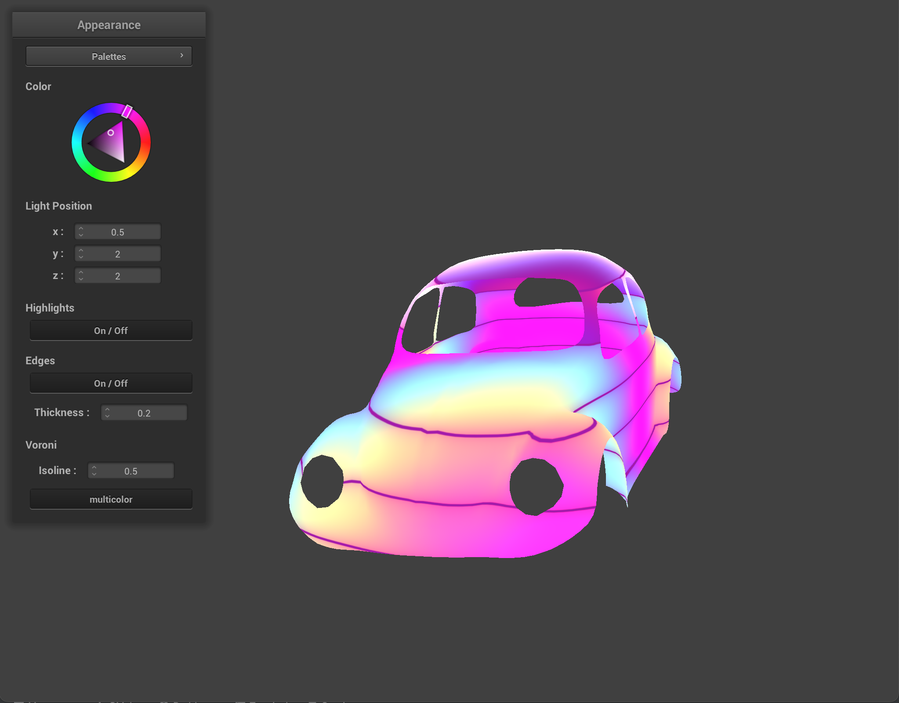

|
|
|
Our project focused on implementing and supporting shaders for non-photorealistic rendering since we are interested in simulation and materials shading. We implemented a total of 5 shaders: Gooch Shading, Cel/Toon Shading, Fresnel Shading, Voronoi Shading, and Palette Shading. We built our project based off the project 4 codebase and adapted it to accommodate .obj files. In addition to shaders, we also modified our GUI to support interactive features such as specular highlights, edge outlines, color changes, etc.
Gooch Shading is a technique used in technical illustration that gives the appearance of a "cool to warm" shading effect. The warm colors typically indicate surfaces are facing toward a light source, while cool colors represent surfaces facing away. It allows shading to occur in mid-tones to preserve visual prominence of edge lines and highlights.
Implementation: The Gooch shading model is represented by the equation $I = \left( \frac{1 + \hat{l} \cdot \hat{n}}{2} \right) k_{cool} - \left( 1 - \frac{1 + \hat{l} \cdot \hat{n}}{2} \right) k_{warm} $, where $I$ is the RBG value to be displayed at a point on a given mesh surface, $k_d$ is the RGB diffuse reflectance at the point, $\hat{l}$ is the unit vector in the direction of the light source, and $\hat{n}$ is the unit surface normal vector at the point. The $k_{cool}$ and $k_{warm}$ are two RBG colors blended together throughout the model by the cosine term $\hat{l} \cdot \hat{n}$. We began with a traditional diffuse shading model, then expanded upon it using the parameters outlined in the Gooch shading model. We also included computations for specular highlights and edge outlines.
Challenges: The Gooch implementation is typically implemented in two passes. On the first pass, objects in a scene are drawn with “cool to warm” shading as described above. On the second pass, the object’s edges are rendered in black, which is where we encountered the most trouble. In an attempt to achieve this, our initial approach involved using multiple render targets. On the first pass, we would render the model to a first render target (active shader) and a second render target (camera-space normals). Then, on the second pass, we would use a filter such as Sobel operator or Canny edge detection over the normals from the first pass to produce an outline for the model. However, when implementing this technique, we struggled with understanding the mechanics of nanogui’s framebuffer objects and how to combine different render targets into one output. We instead decided to build an edge detector into our fragment shader code. Outlines are rendered black under the condition that the dot product between the normal vector at any point on the model space and the camera direction vector is within 0 and 1 and less than a predetermined edge thickness value.
Results:
|
|
|
|
|
|
|
|
Cel Shading, or Toon Shading, gives 3D objects a 2D “cartoonish” and hand drawn appearance. Cel shading is often used in video games, and we can see this shading technique being used in titles such as The Legend of Zelda: Breath of the Wild or The Legend of Zelda: Wind Waker.
Implementation: The typical Cel Shader depends on a few factors: the number of tones of shading, specular reflection/highlights, and rim lighting. Our implementation of the Cel Shader relied on dividing the surface of an object into 3 bands of light, which gave the impression of a 3 tone shading effect. We did this by calculating the intensity of light relative to the position and checking to see if this intensity is above three thresholds (thus the 3 tone shading), in which we would accordingly set the colors to be a lighter or darker shade. In addition to this, we also added specular lighting for highlights, which depended on the direction of the camera (view direction of the surface). The formula we used for our specularly reflected lights was $k_s (I/r^2) \ max(0, n \cdot h)^p$ where $k_s$ is our specular coefficient, $I$ is our light source intensity, $r$ is the specular reflectivity, $n$ is the normal of our surface, $h$ is our half vector (the vector between the viewing direction and the light source), and $p$ is the specular exponent.
We started our implementation of Cel Shading based on the Blinn-Phong model, but without the diffuse and ambient lighting components. We referred to these resources (1, 2) while creating our Cel Shader, but excluded casting shadows off of our model objects.
Challenges: At first we had rim lighting which for our .json objects, but we later removed it as it didn’t render as expected and our .obj objects appeared overexposed.
Results:
|
|
|
|
Fresnel Shading darkens or lightens the outline of an object. This contributes to the perceived depth of an object. For our shader, we decided to lighten the outline of our objects for a highlighted or glowing effect.
Implementation: We implemented Fresnel Shading by first highlighting one side of our object then making our highlighting relative to our view direction. We did this by taking the dot product between the surface normal and the camera position. We then subtracted the resulting value from 1.0 and clamp it between 0 and 4 to prevent unwanted lighting effects. We then raised this resulting fresnel value by an exponent. Based on this exponent value, our fresnel effect would either be stronger or weaker (for bigger exponents, our fresnel effect would be seen closer to the edges). We then multiplied our fresnel value by a color adjustment, which would be the “glow” color of the object, and by the intensity, which changes how intense the “glowing” effect of the Fresnel Shader is. We referred to these resources (1, 2) to better understand how Fresnel Shading works.
Challenges: At first the Fresnel Shader was illuminating the inside so that the inside was glowing or lighter but the outside was dark. We fixed this by inverting our Fresnel value. Some Fresnel Shading implementations did not use clamping, but we wanted to prevent overly bright or dark (negative emissions) results with our objects.
Results:
Voronoi shading generates patterns that resembles cells you can find in nature based on the points closest to a pixel.
Implementation: To create our Voronoi Shader, we first started by generating cellular noise (procedural texturing technique) to create our pattern. We started by retrieving the position of a pixel and scaling it by a factor that determines how big our cells are. We then we tiled our space using floor() and fract() to create a distance field. We then iterate through the grid we created to check the neighbors of a selected point. Some of the implementations of the Voronoi Shader utilized the real-time motion of a mouse and tracked time on the local device for interactivity with the shader. Instead of this, we decided to vary the pattern of the shader based on the camera position. We generated a random point based on the sum of the current tile coordinate and a neighbor coordinate and generate a random coordinate based on this value using a hash function we created. Surprisingly we didn’t have to do much to extend our implementation to use the Voronoi Algorithm. We just had to keep track of the point that is closest to a pixel, and adjust our color accordingly. We also created a custom Voronoi Shader after experimenting with this algorithm, where we drew in isolines (and added a feature to toggle them on or off) and added a multicolor effect (which was also togglable). We used (this) as a reference for implementing our Voronoi Shader.
Challenges: Our Voronoi Shader doesn’t work properly with the new meshes we imported as .obj files despite our best efforts. We realized this was due to the use of for loops in the implementation and the fact that the .obj files only worked with very specific sizes.
Results (Voronoi):
Results (Custom):
Palette Shading adds color variation to an object.
Implementation: There are several ways to implement this, such as through linear interpolation or triangle waves, but we decided to do cosine based palette shading. We implement this using the cosine equation: $color(t) = a + b * cos(2*pi*(c*t+d))$, where $t$ is the normalized palette index or domain, $c$ is the number of times cosine oscillates, $d$ is the phase, and $a$, $b$, $c$, and $d$ are RGB 3D vectors. The cosine based method is more efficient compared to other methods of palette shading such as by using linear interpolation or triangle waves and is reasonably simple to implement.
Challenges: We found a MIT-licensed shader on ShaderToy called Pallete and made a few modifications to test in our project. The main difference in our implementation is that we added color variation through the GUI. It is worth noting that this shader works better on smaller objects than on larger ones because it used x and y vertex positions to define color. If the object is too large, the little color variation will appear.
Results:
|
|
|
|  |
We wanted to see how our shaders would appear on objects that were not provided in Project 4. For this, we integrated an open source OBJ Loader (here) into our project 4.
Challenges: Some function names from OBJ Loader conflicted with CGL’s function names, so we used the keyword “inline” to avoid duplicate errors. One of the main issues during our implementation of the OBJ Loader was finding a good way to pass the OBJ file as a parameter. We first tried doing this with the existing parameter “-f”, but decided to add a second parameter “-m” for the OBJ file. Because Project 4 has cloth hardcoded, we decided to use both “-f” to define a very thin cloth (that cannot be seen) with “plane_without_plane.json” and “-m” to define the OBJ file.
Another problem we faced was getting OBJ files that would work in our project. OBJ files that were too large wouldn’t fit the buffer and would either not show or break the GUI. Our workaround was to use Blender to import DAE files from projects 2 and 3 and export them as OBJ files. We only use files smaller than 2MB, as any OBJ file greater than 2MB will not run.
With the addition of different shaders and mesh objects, we updated our GUI to reflect such changes. The features our GUI uses are:
x, y, z coordinates of our light to demonstrate how our shader reacts to light from different locations.We learned that starting our project early is important. We learned early on that our original melting simulation idea was too ambitious given that we were struggling to get our fluid simulation to resemble actual fluids and still had to implement phase changes and heat transfer. Luckily, we were able to pivot to implementing non-photorealistic shaders, which still aligned with our original interest of simulation and materials shading.
Despite the fact we only learned photorealistic techniques in class, photorealistic shading is not the only type of shading that is commonly used. In fact, there is a move towards non-photorealistic styles now as animated films are becoming increasingly stylized.